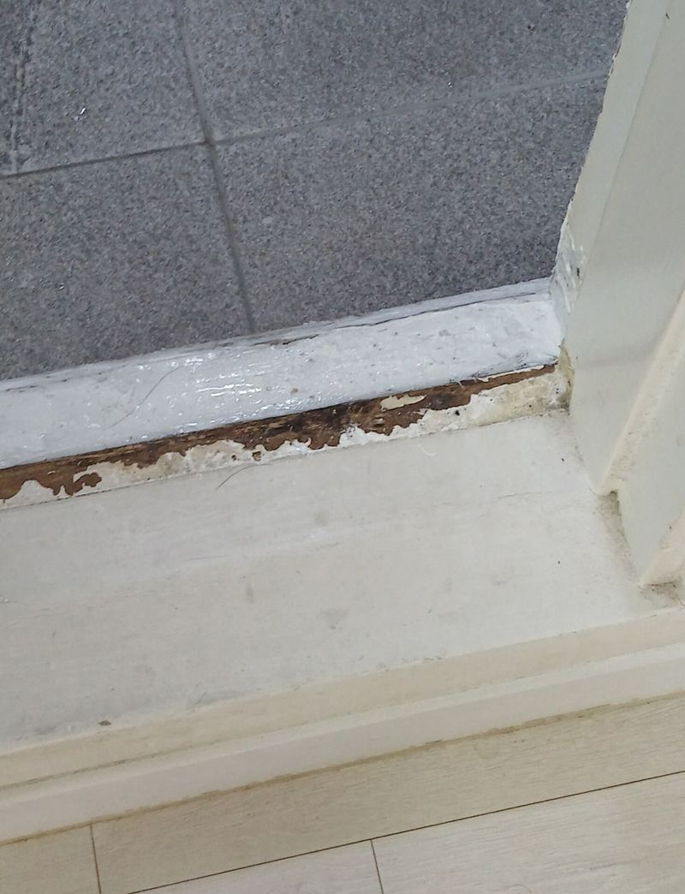
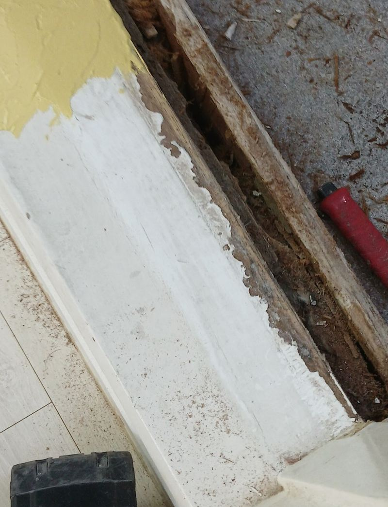
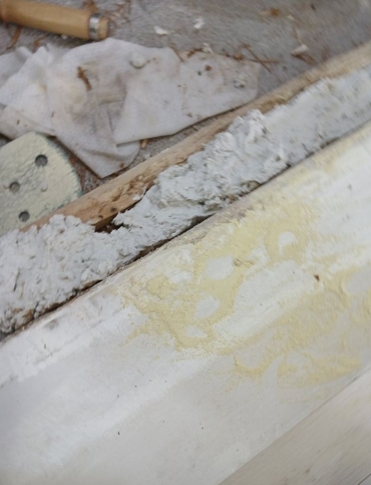
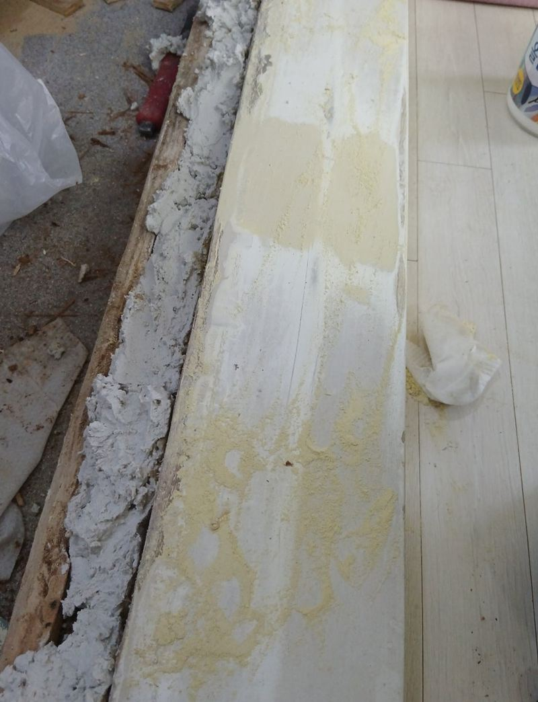
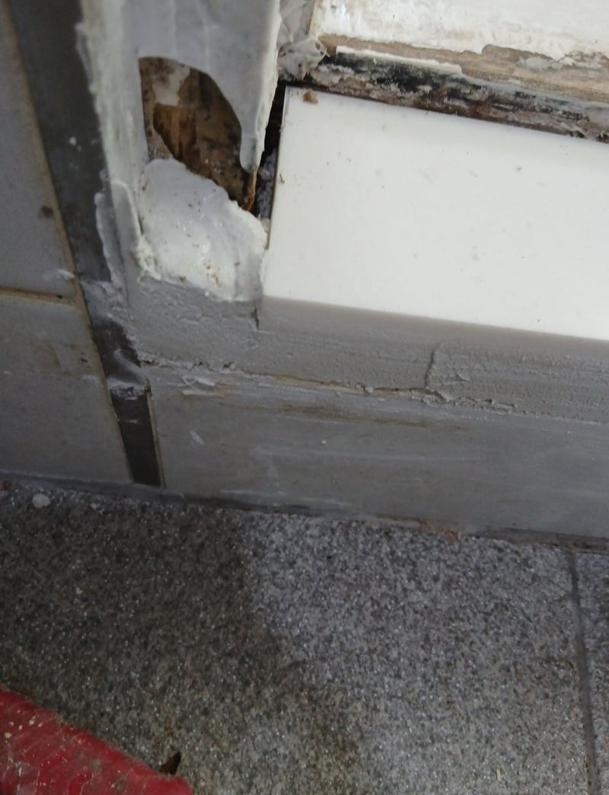
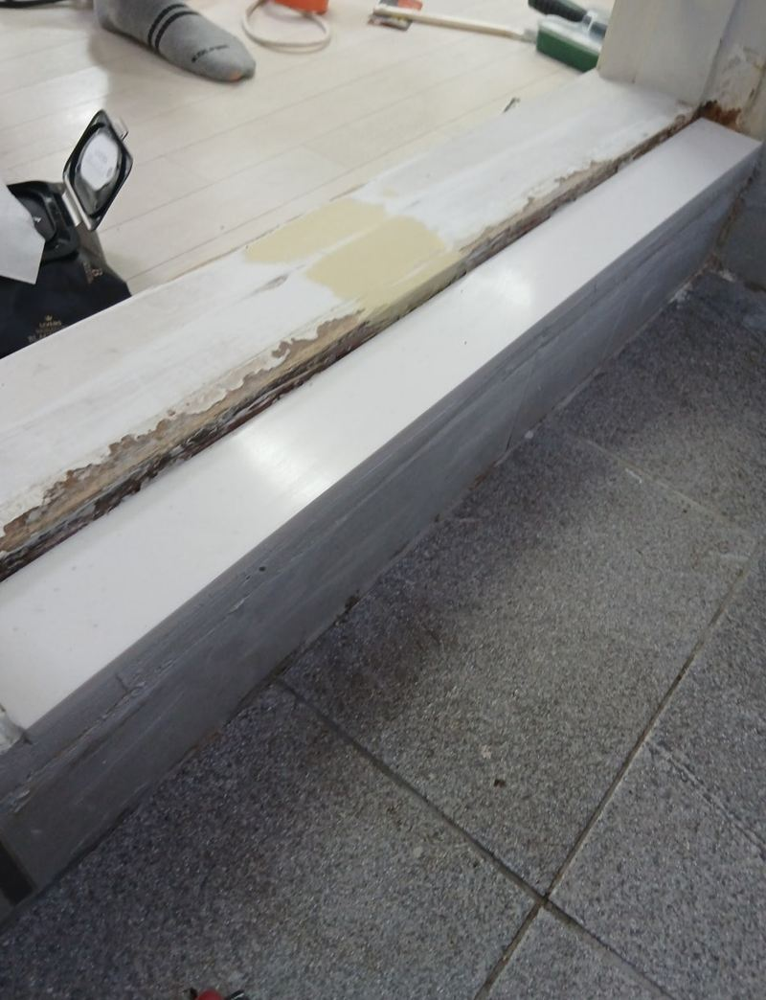

동작 썩은 문지방 잘라내고 보수하는 방법
← 밀어서 전후 비교 →
샤워부스 바로 앞 문지방이 물을 계속 맞아 검게 썩고 페인트가 벗겨진 집이었어요. 급한 대로 위에 실리콘을 덧발라 두셨지만 속은 이미 물러져 있었어요. 썩은 나무를 통째로 잘라 내고 물에 강한 대리석으로 바꿨어요.
| 현장 | 서울 동작 대방동 빌라 화장실 앞 |
|---|---|
| 상태 | 샤워 물에 썩고 페인트 벗겨짐, 실리콘 덧방 흔적 |
| 한 일 | 통나무 문지방 절단 철거 → 대리석 재단 → 백시멘트 기초 → 대리석 고정 |
| 마감 | 벽 아래 방수 페인트, 틈새 실리콘 |
실리콘으로 덮으면 안 되는 이유
실리콘 덧방은 겉에서 물이 들어가는 걸 잠깐 막을 뿐, 이미 젖은 나무 속은 계속 썩어요. 오히려 실리콘 안에 습기가 갇혀 곰팡이가 더 빨리 번지기도 해요. 같은 집 거실 쪽 문지방은 멀쩡했는데, 화장실 쪽만 상한 것도 물이 튀는 위치 때문이었어요.

통나무 문지방 잘라내기
이 집 문지방은 통나무 한 덩어리로 박혀 있어 한 번에 빠지지 않았어요. 전동 공구로 조금씩 잘라 내며 철거했어요. 힘으로 들어 올리면 옆 마루와 벽이 같이 깨져서, 주변을 상하지 않게 단계별로 떼어 냈어요.


대리석 문지방 설치 순서
-
문틀 높이에 맞춰 재단
대리석을 문틀 폭과 높이에 맞춰 잘랐어요. 주변 바닥·벽 색과 어울리는 색으로 골랐어요.
-
백시멘트로 기초 채우기
문지방이 빠진 빈 자리를 백시멘트로 채워 단단한 바닥을 만들었어요. 기초가 비면 대리석이 들뜨고 흔들려요.

-
대리석 고정과 단차 조율
대리석을 앉히고 문이 걸리거나 끌리지 않게 높이를 맞췄어요.

-
방수 페인트와 실리콘
대리석과 이어지는 벽 아랫부분에 방수 페인트를 덧칠하고, 틈새는 실리콘으로 막아 물이 다시 스며들지 않게 했어요.

문지방이 상했다는 신호
- 밟으면 살짝 꺼지는 느낌이에요나무 속이 물러진 상태예요. 겉보다 안쪽 손상이 커요.
- 페인트가 들뜨고 검은 얼룩이 생겨요곰팡이가 번지는 중이에요. 화장실 냄새의 원인이 되기도 해요.
- 문지방과 바닥 사이가 벌어졌어요그 틈으로 물이 들어가 아래 바닥까지 상할 수 있어요.
- 화장실 문이 아래에 끌려요문지방이 부풀어 올라 높이가 달라진 경우예요.
문지방 보수 질문
나무 문지방을 새 나무로 바꾸면 안 되나요?
물이 자주 닿는 화장실 앞은 다시 썩기 쉬워서 대리석을 권해요. 거실 쪽처럼 물이 안 닿는 곳은 나무도 괜찮아요.
대리석 색은 고를 수 있나요?
바닥과 벽 색을 보고 어울리는 색을 같이 골라요. 사진을 보내 주시면 미리 추천해 드려요.
문틀도 썩었으면 같이 바꿔야 하나요?
문틀 아래까지 물러졌다면 문틀 보수나 교체를 함께 검토해요.
작업 후 언제부터 밟아도 되나요?
백시멘트 기초가 자리 잡을 때까지는 대리석 위에 체중을 싣지 않는 게 좋아요. 그동안 화장실 출입은 살짝 넘어 다니시면 돼요.
거실 쪽 문지방도 같이 바꿔야 하나요?
이 현장처럼 거실 쪽이 멀쩡하면 화장실 쪽만 바꿔도 돼요. 색을 맞추고 싶으시면 같이 하셔도 좋아요.
빌라 공용부가 아니어도 집주인 허락이 필요한가요?
전월세라면 집주인과 미리 상의하시는 게 좋아요. 작업 전후 사진을 남겨 드릴 수 있어요.
대리석이 미끄럽지 않나요?
물기가 있으면 미끄러울 수 있어서, 표면이 덜 미끄러운 마감을 고르거나 발매트를 함께 쓰시길 권해요.
문지방 높이를 낮출 수 있나요?
바닥 높이와 방수 상태를 보고 조금 낮출 수 있어요. 욕실 물이 밖으로 넘치지 않을 만큼은 남겨요.
욕실 바닥 타일도 같이 고칠 수 있나요?
문턱 주변 깨진 타일 몇 장은 함께 정리할 수 있어요. 바닥 전체 공사는 범위를 보고 따로 상의해요.
화장실 문 아래 틈으로 물이 새요
문지방 높이가 낮아졌거나 실리콘이 떨어진 경우가 많아요. 문지방을 다시 놓으면서 함께 막아요.
다른 문지방·문턱 현장
문지방 전체와 썩은 부분을 가까이 찍어서 보내 주세요.
전화 상담 010-4517-9872